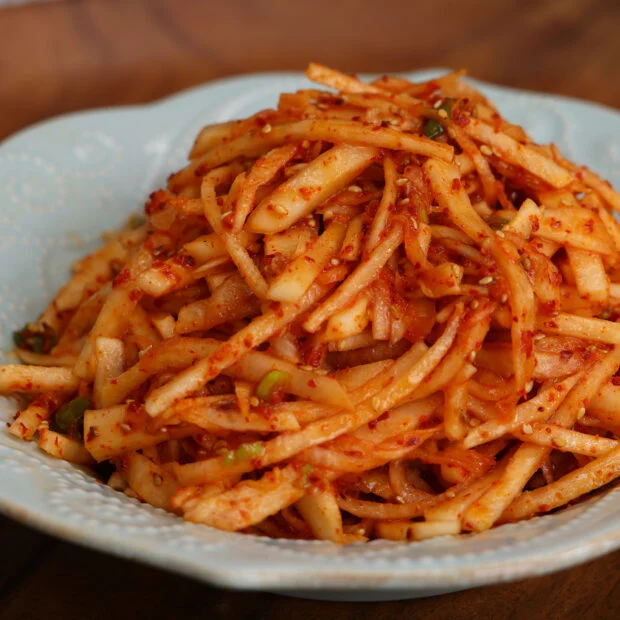

Country-style radish salad
Home

Recipe by Maangchi
Spicy radish salad
Recipe type: side dish, spicy
Ingredients: Fish sauce, garlic, gochugaru, green onion, Korean radish, sesame seeds, and toasted sesame oil.
Ingredients
- 1 pound peeled Korean radish or daikon, cut into thin matchsticks
- 2 garlic cloves, minced
- 1 green onion, chopped
- 2 tablespoons Korean hot pepper flakes (gochu-garu)
- 2 tablespoons fish sauce (or light colored Korean soup soy sauce)
- 2 tablespoon toasted sesame oil
- 1 tablespoon toasted sesame seeds
Directions:
- In a large bowl, combine the radish matchsticks, garlic, green onion, gochu-garu, fish sauce, sesame oil, and sesame seeds and mix well by hand until the radishes and seasonings are well incorporated and the radishes look shiny and juicy.
- Transfer to a large plate or a bowl and serve with rice. The best way to enjoy it is to finish it all in one sitting right after making it, since the radish will start releasing moisture. But if you have leftovers, you can store them in the refrigerator for 2 to 3 days.